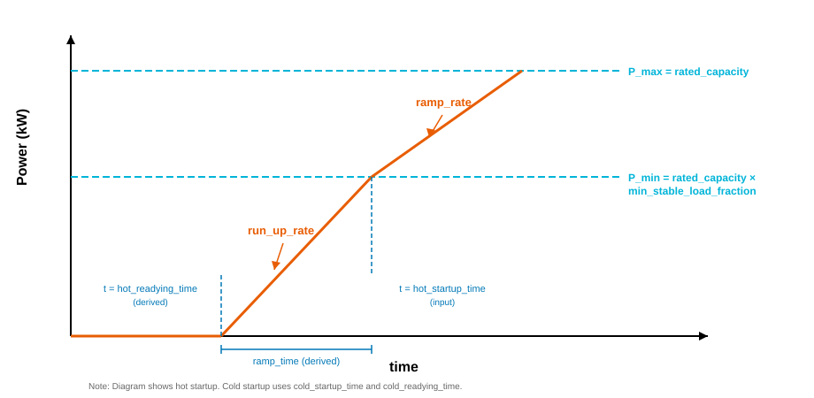

Thermal Component Base#
The ThermalComponentBase class provides common functionality for thermal power plant components in Hercules. It serves as a base class for multiple thermal plant types including:
Reciprocating internal combustion engines (RICE)
Open-cycle gas turbines (OCGT)
Combined-cycle gas turbines (CCGT)
Coal-fired power plants
The parameterized model is based primarily on [1], with additional parameters and naming conventions from [2] and [3]. Table 1 on page 48 of [1] provides many of the default values used in subclasses.
Note: All efficiency values throughout this module are HHV (Higher Heating Value) net plant efficiencies, consistent with the data in Exhibit ES-4 of [5].
State Machine#
The thermal component operates as a state machine with six states:
State Transitions#
The decision between hot, warm, and cold starting is based on how long the unit has been off. The cutoff times are hardcoded based on reference [5]: less than 8 hours triggers a hot start, 8-48 hours triggers a warm start, and 48+ hours triggers a cold start.
From State |
To State |
Diagram Label |
Condition |
|---|---|---|---|
OFF (0) |
HOT STARTING (1) |
start (hot) |
|
OFF (0) |
WARM STARTING (2) |
start (warm) |
|
OFF (0) |
COLD STARTING (3) |
start (cold) |
|
HOT STARTING (1) |
OFF (0) |
abort |
|
HOT STARTING (1) |
ON (4) |
P >= P_min |
|
WARM STARTING (2) |
OFF (0) |
abort |
|
WARM STARTING (2) |
ON (4) |
P >= P_min |
|
COLD STARTING (3) |
OFF (0) |
abort |
|
COLD STARTING (3) |
ON (4) |
P >= P_min |
|
ON (4) |
STOPPING (5) |
shutdown |
|
STOPPING (5) |
OFF (0) |
P = 0 |
|
Parameters#
All parameters below are defined in the Hercules input YAML file. The base class does not provide default values—subclasses (such as OpenCycleGasTurbine) supply defaults based on References [1-3].
Required Parameters#
Parameter |
Units |
Description |
|---|---|---|
|
kW |
Maximum power output (P_max) |
|
fraction (0-1) |
Minimum operating point as fraction of rated capacity |
|
fraction/min |
Maximum rate of power change during normal operation, as fraction of rated capacity per minute |
|
fraction/min |
Maximum rate of power increase during startup ramp, as fraction of rated capacity per minute |
|
s |
Time to reach P_min from off (hot start). Includes both readying time and ramping time |
|
s |
Time to reach P_min from off (warm start). Includes both readying time and ramping time |
|
s |
Time to reach P_min from off (cold start). Includes both readying time and ramping time |
|
s |
Minimum time unit must remain on before shutdown is allowed |
|
s |
Minimum time unit must remain off before restart is allowed |
|
kW |
Initial power output. State is derived automatically: power > 0 sets ON, power == 0 sets OFF. When ON, |
|
J/m³ |
Higher heating value of fuel |
|
kg/m³ |
Fuel density for mass calculations |
|
dict |
Dictionary containing |
Optional Parameters#
Parameter |
Units |
Description |
|---|---|---|
|
fraction (0-1) |
Optional, fuel consumption during startup, as a fraction of rated fuel consumption. Defaults to 0 |
|
fraction (0-1) |
Optional, fuel consumption during shutdown, as a fraction of rated fuel consumption. Defaults to 0 |
|
s |
An optional parameter to set the |
Derived Parameters#
The following parameters are computed from the input parameters:
Parameter |
Formula |
Description |
|---|---|---|
|
|
Maximum power output |
|
|
Minimum stable power output |
|
|
Ramp rate in kW/s |
|
|
Run-up rate in kW/s |
|
|
Time to ramp from 0 to P_min |
|
|
Preparation time before hot start ramp begins |
|
|
Preparation time before warm start ramp begins |
|
|
Preparation time before cold start ramp begins |
Startup and Ramp Behavior#
The following diagram illustrates the startup sequence and ramp behavior, showing how the input and derived parameters relate to each other:
{kind=link}

During startup:
The unit receives a positive
power_setpointwhile in the OFF stateIf
min_down_timeis satisfied, the unit transitions to HOT STARTING, WARM STARTING, or COLD STARTING (depending on how long it has been off: <8h = hot, 8-48h = warm, >48h = cold)The unit remains at zero power during the readying time (
hot_readying_time,warm_readying_time, orcold_readying_time)After readying, the unit ramps up to P_min using
run_up_rateOnce P_min is reached, the unit transitions to ON state
During normal operation (ON state):
Power changes are constrained by
ramp_ratePower output is constrained between P_min and P_max
The unit must remain on for at least
min_up_timebefore shutdown is allowed
During shutdown:
The unit ramps down to zero using
ramp_rateOnce power reaches zero, the unit transitions to OFF
Efficiency and Fuel Consumption#
The base class calculates HHV net plant efficiency and fuel consumption based on the efficiency_table and hhv parameters.
Efficiency Table Format#
The efficiency_table parameter specifies how HHV net plant efficiency varies with load. All efficiency values must be HHV (Higher Heating Value) net plant efficiencies:
efficiency_table:
power_fraction: # fraction of rated_capacity (0-1)
- 1.0
- 0.75
- 0.50
- 0.25
efficiency: # HHV net plant efficiency, fraction (0-1), e.g., 0.39 = 39%
- 0.39
- 0.37
- 0.325
- 0.245
Both arrays must have the same length and values must be in the range [0, 1]. The arrays are sorted by power_fraction internally.
Efficiency Interpolation#
HHV net efficiency is calculated by linear interpolation from the table based on current power fraction (power_output / rated_capacity). Values outside the table range are clamped to the nearest endpoint.
Fuel Rate Calculation#
Fuel volume rate is calculated as:
Where:
poweris in W (converted from kW internally)efficiencyis the interpolated HHV net efficiency (0-1)hhvis the higher heating value in J/m³Result is fuel volume rate in m³/s
The fuel mass rate is then computed from the volume rate using the fuel density:
Where:
fuel_volume_rateis in m³/sfuel_densityis in kg/m³Result is fuel mass rate in kg/s
Outputs#
The base class outputs are returned in h_dict:
Output |
Units |
Description |
|---|---|---|
|
kW |
Actual power output |
|
integer |
Current operating state (0-5), corresponding to the |
|
fraction (0-1) |
Current HHV net plant efficiency |
|
m³/s |
Fuel volume flow rate |
|
kg/s |
Fuel mass flow rate (computed from volume rate using |
References#
Agora Energiewende (2017): “Flexibility in thermal power plants - With a focus on existing coal-fired power plants.”
“Impact of Detailed Parameter Modeling of Open-Cycle Gas Turbines on Production Cost Simulation”, NREL/CP-6A40-87554, National Renewable Energy Laboratory, 2024.
Deane, J.P., G. Drayton, and B.P. Ó Gallachóir. “The Impact of Sub-Hourly Modelling in Power Systems with Significant Levels of Renewable Generation.” Applied Energy 113 (January 2014): 152–58. https://doi.org/10.1016/j.apenergy.2013.07.027.
IRENA (2019), Innovation landscape brief: Flexibility in conventional power plants, International Renewable Energy Agency, Abu Dhabi.
M. Oakes, M. Turner, “Cost and Performance Baseline for Fossil Energy Plants, Volume 5: Natural Gas Electricity Generating Units for Flexible Operation,” National Energy Technology Laboratory, Pittsburgh, May 5, 2023.
I. Staffell, “The Energy and Fuel Data Sheet,” University of Birmingham, March 2011. https://claverton-energy.com/cms4/wp-content/uploads/2012/08/the_energy_and_fuel_data_sheet.pdf